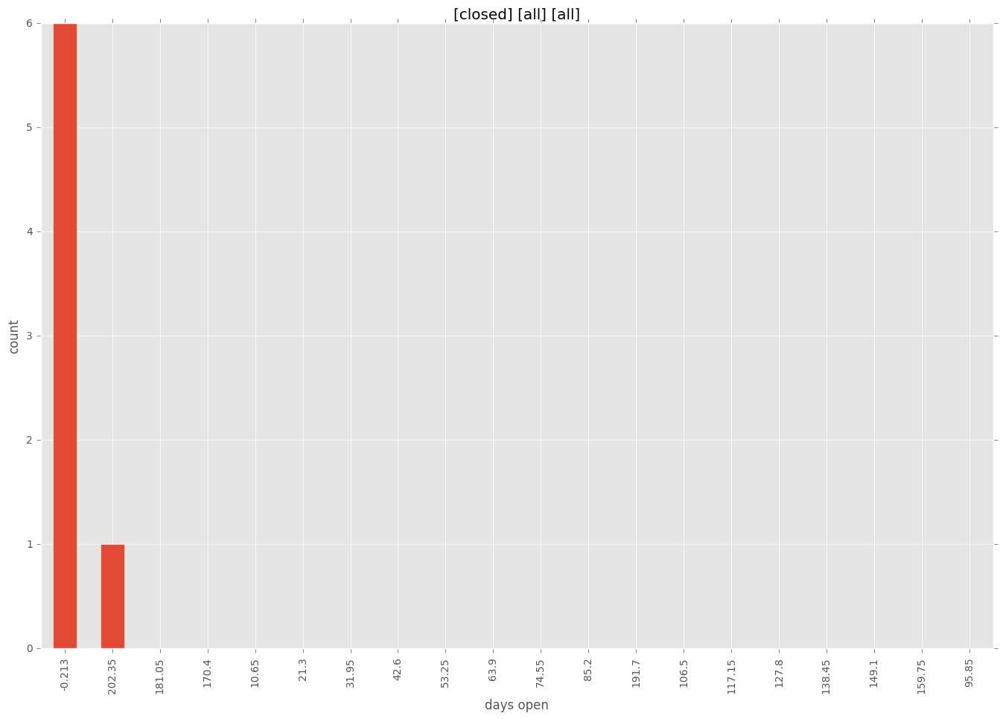

total issue counts
feature pull request: 2
pullrequest: 7
bugfix pull request: 3
feature idea: 1
issue: 2
new plugin: 2
bug report: 1
issue history
pullrequest history
days open by issue type
bugfix pull request
count: 6
std: 2.06559111798
min: 0
max: 4
median: 0.0
mean: 1.33333333333
all
count: 12
std: 82.4571514072
min: 0
max: 213
median: 1.0
mean: 36.5
pullrequest
count: 0
std: nan
min: nan
max: nan
median: nan
mean: nan
feature pull request
count: 2
std: 0.0
min: 2
max: 2
median: 2.0
mean: 2.0
feature idea
count: 0
std: nan
min: nan
max: nan
median: nan
mean: nan
issue
count: 0
std: nan
min: nan
max: nan
median: nan
mean: nan
new plugin
count: 3
std: 122.975607337
min: 0
max: 213
median: 213.0
mean: 142.0
bug report
count: 1
std: nan
min: 0
max: 0
median: 0.0
mean: 0.0
closures grouped by total days open
